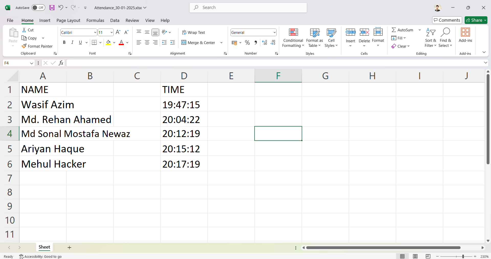

Introduction
This system uses face recognition to automate attendance tracking for students or employees.
Working Principle
The system captures images using the OpenCV module and registers faces using the NumPy module. It then recognizes the faces to mark attendance in an Excel sheet. The process involves the following steps:
- Face Detection: The system uses Haar Cascades to detect faces in real-time.
- Face Registration: Detected faces are resized and stored for future recognition.
- Face Recognition: The system uses K-Nearest Neighbors (KNN) to recognize faces and mark attendance.
- Attendance Marking: Recognized faces are marked in a CSV and Excel file with a timestamp.

Code for Face Registration
# filepath: /c:/Users/Md.zamal/OneDrive/Desktop/face_recognition_project-main/add_faces.py
import cv2
import pickle
import numpy as np
import os
video = cv2.VideoCapture(0)
facedetect = cv2.CascadeClassifier('data/haarcascade_frontalface_default.xml')
faces_data = []
i = 0
name = input("Enter Your Name: ")
while True:
ret, frame = video.read()
gray = cv2.cvtColor(frame, cv2.COLOR_BGR2GRAY)
faces = facedetect.detectMultiScale(gray, 1.3, 5)
for (x, y, w, h) in faces:
crop_img = frame[y:y+h, x:x+w, :]
resized_img = cv2.resize(crop_img, (50, 50))
if len(faces_data) <= 100 and i % 10 == 0:
faces_data.append(resized_img)
i += 1
cv2.putText(frame, str(len(faces_data)), (50, 50), cv2.FONT_HERSHEY_COMPLEX, 1, (50, 50, 255), 1)
cv2.rectangle(frame, (x, y), (x+w, y+h), (50, 50, 255), 1)
cv2.imshow("Frame", frame)
k = cv2.waitKey(1)
if k == ord('q') or len(faces_data) == 100:
break
video.release()
cv2.destroyAllWindows()
faces_data = np.asarray(faces_data)
faces_data = faces_data.reshape(100, -1)
# Paths to the data files
names_path = 'C:/Users/Md.zamal/OneDrive/Desktop/face_recognition_project-main/data/names.pkl'
faces_path = 'C:/Users/Md.zamal/OneDrive/Desktop/face_recognition_project-main/data/faces.pkl'
# Clear existing data before adding new entries
if os.path.isfile(names_path):
os.remove(names_path)
if os.path.isfile(faces_path):
os.remove(faces_path)
names = [name] * 100
with open(names_path, 'wb') as f:
pickle.dump(names, f)
with open(faces_path, 'wb') as f:
pickle.dump(faces_data, f)
Code for Face Recognition and Attendance Marking
# filepath: /c:/Users/Md.zamal/OneDrive/Desktop/face_recognition_project-main/test.py
from sklearn.neighbors import KNeighborsClassifier
import cv2
import pickle
import numpy as np
import os
import csv
import time
from datetime import datetime
from win32com.client import Dispatch
import openpyxl
from openpyxl.styles import Font
def speak(str1):
speak = Dispatch("SAPI.SpVoice")
speak.Speak(str1)
video = cv2.VideoCapture(0)
facedetect = cv2.CascadeClassifier('data/haarcascade_frontalface_default.xml')
# Load the face data and labels using the correct path
with open('C:/Users/Md.zamal/OneDrive/Desktop/face_recognition_project-main/data/names.pkl', 'rb') as w:
LABELS = pickle.load(w)
with open('C:/Users/Md.zamal/OneDrive/Desktop/face_recognition_project-main/data/faces.pkl', 'rb') as f:
FACES = pickle.load(f)
# Check lengths of FACES and LABELS
print('Shape of Faces matrix --> ', FACES.shape)
print('Number of Labels --> ', len(LABELS))
if FACES.shape[0] != len(LABELS):
raise ValueError(f"Mismatch in number of samples: FACES({FACES.shape[0]}) and LABELS({len(LABELS)})")
knn = KNeighborsClassifier(n_neighbors=5)
knn.fit(FACES, LABELS)
imgBackground = cv2.imread("background.png")
COL_NAMES = ['NAME', 'TIME']
# Keep track of already marked students
marked_students = set()
# Excel file setup
excel_file = "Attendance/Attendance_" + datetime.now().strftime("%d-%m-%Y") + ".xlsx"
if not os.path.isfile(excel_file):
workbook = openpyxl.Workbook()
sheet = workbook.active
sheet.append(COL_NAMES)
workbook.save(excel_file)
while True:
ret, frame = video.read()
gray = cv2.cvtColor(frame, cv2.COLOR_BGR2GRAY)
faces = facedetect.detectMultiScale(gray, 1.3, 5)
for (x, y, w, h) in faces:
crop_img = frame[y:y+h, x:x+w, :]
resized_img = cv2.resize(crop_img, (50, 50)).flatten().reshape(1, -1)
output = knn.predict(resized_img)[0] # Get the label (name) of the predicted person
if output not in marked_students: # Check if the student has not been marked
ts = time.time()
date = datetime.fromtimestamp(ts).strftime("%d-%m-%Y")
timestamp = datetime.fromtimestamp(ts).strftime("%H:%M:%S") # Corrected time format
csv_file = "Attendance/Attendance_" + date + ".csv"
exist = os.path.isfile(csv_file)
cv2.rectangle(frame, (x, y), (x+w, y+h), (0, 0, 255), 1)
cv2.rectangle(frame, (x, y), (x+w, y+h), (50, 50, 255), 2)
cv2.rectangle(frame, (x, y-40), (x+w, y), (50, 50, 255), -1)
cv2.putText(frame, str(output), (x, y-15), cv2.FONT_HERSHEY_COMPLEX, 1, (255, 255, 255), 1)
cv2.rectangle(frame, (x, y), (x+w, y+h), (50, 50, 255), 1)
attendance = [str(output), str(timestamp)]
# Mark the student as present in CSV
if exist:
with open(csv_file, "+a") as csvfile:
writer = csv.writer(csvfile)
writer.writerow(attendance)
csvfile.close()
else:
with open(csv_file, "+a") as csvfile:
writer = csv.writer(csvfile)
writer.writerow(COL_NAMES)
writer.writerow(attendance)
csvfile.close()
# Mark the student as present in Excel
workbook = openpyxl.load_workbook(excel_file)
sheet = workbook.active
sheet.append(attendance)
# Adjust font size for names dynamically based on length
name_cell = sheet.cell(row=sheet.max_row, column=1)
name_length = len(str(output))
font_size = max(8, min(12, 12 - 0.1 * (name_length - 10)))
name_cell.font = Font(size=font_size)
workbook.save(excel_file)
# Add the student to the set of marked students
marked_students.add(output)
speak("Attendance Taken for " + str(output))
imgBackground[162:162 + 480, 55:55 + 640] = frame
cv2.imshow("Frame", imgBackground)
k = cv2.waitKey(1)
if k == ord('q'):
break
video.release()
cv2.destroyAllWindows()
Modules Used
- Numpy
- Python Opencv
- CSV
- Pandas
- OS
- Pickle
- Open pyxl
- Streamlit
- Scikit-learn
Applications
- Automated attendance system
- Employee or student tracking
- Enhancing security with face recognition
- Real-time attendance monitoring
- Data analysis and reporting
Future Enhancements
- Integration with cloud storage for data backup
- Mobile application for remote attendance marking
- Improved face recognition accuracy with deep learning models
- Real-time notifications for attendance updates
- Multi-camera support for larger areas